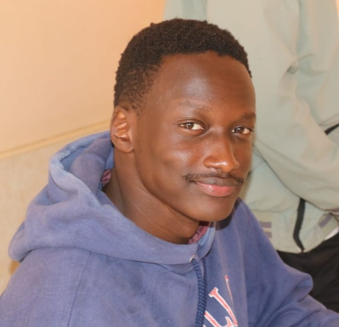
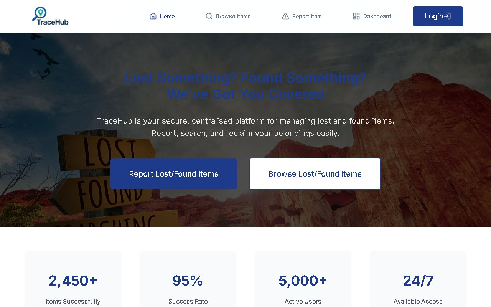

BeiSmart KE
A price comparison app for Kenyan online stores: one search checks seven stores, puts the same product's prices side by side and keeps a daily price history.
Final-year Computer Science student at Kabarak University and freelance developer in Kenya. I turn messy manual processes into working web apps.

// About
I build web apps for jobs people still do by hand: running an election, comparing prices across stores, tracking down lost items on campus.
a final-year Computer Science student at Kabarak University, near Nakuru, Kenya. I've built three web apps that are live today: a voting system that runs a whole election online, a price comparison app that checks seven Kenyan stores every day, and a lost-and-found platform built in a team of three. I've also worked as a software development intern at the Catholic University of Eastern Africa, and I take on freelance projects.
The part I care about most is the unglamorous one: data that's right, apps that tell you plainly what they can't do, and software that keeps working when a store changes its layout or someone mistypes their ID.
// Services
From interfaces to full systems, built to be reliable and easy to maintain.
Record-keeping, inventory or voting systems that replace spreadsheets and paper. I start from how your team already works, so the system fits the process instead of forcing a new one.
Example: the Voting System
Custom front ends and back ends, from prototype to deployment. You get one developer across the whole stack, so there is no hand-off gap between design, data and server.
Example: TraceHub
Scripts that collect, clean and report data so nobody retypes it. Good for repetitive work such as copying figures between sites, tidying exports or producing a weekly summary.
// Process
A clear workflow for every project, from first call to launch.
Understand the problem, map the system, and agree scope before writing code.
Clean, working software with regular check-ins so there are no surprises.
Ship it, make sure it works for real users, and stay available after launch.
// Work
A price comparison app for Kenyan online stores: one search checks seven stores, puts the same product's prices side by side and keeps a daily price history.

An online election system: voters log in with their registration number, vote one position at a time on any device, and see results the moment voting closes.

A lost-and-found web app for reporting and finding lost items across campuses.
// Testimonials
Feedback from clients, once there's some to show.
// FAQ
Management and record-keeping systems, web apps and dashboards, and automation or scraping tools for small organizations and businesses.
Freelance projects now, and I'm open to full-time software engineering roles after graduation.
By M-Pesa or bank transfer. How the payment is split, for example a deposit to start, depends on the project, and we agree on it before any work begins.
A small site usually takes 1–2 weeks, and a larger web app or system 4–8 weeks. Once we've talked through what you need, I'll give you a timeline for your project.
Reach out through the contact form below or on WhatsApp, and we'll talk through what you need.
// Contact
Email me at techsavvyzone@gmail.com, message me on WhatsApp, or use the form below.
Thanks for reaching out. I'll get back to you soon.